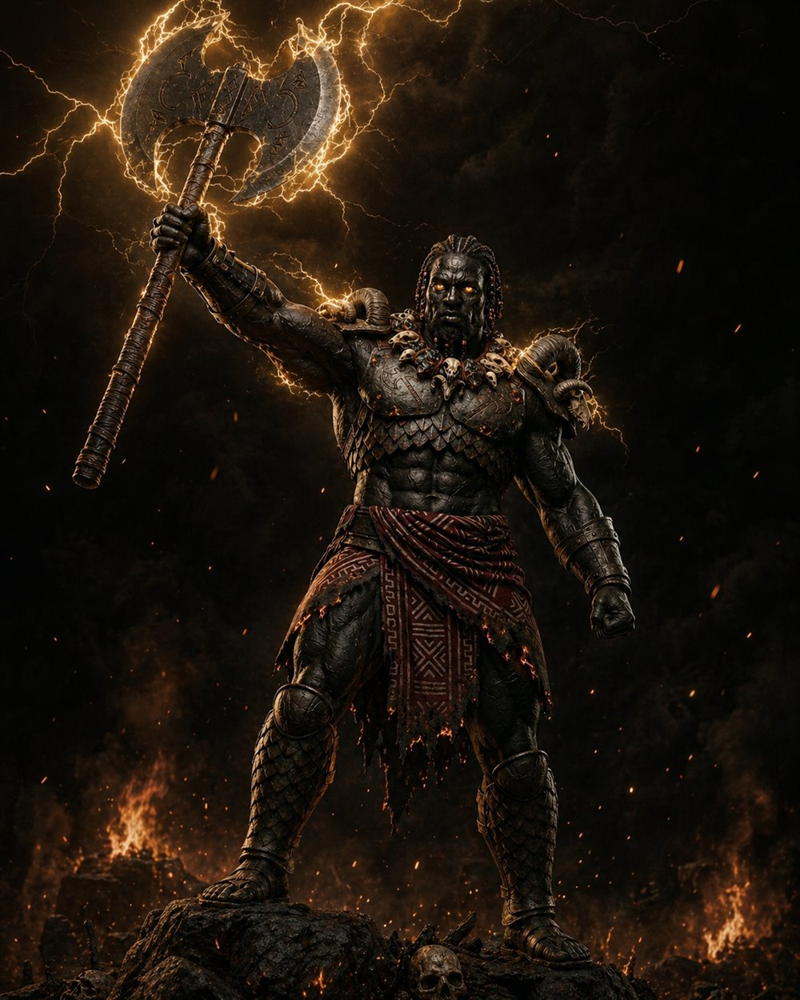
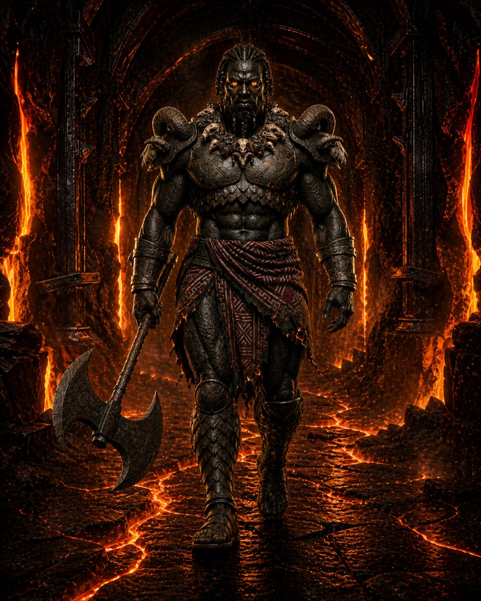
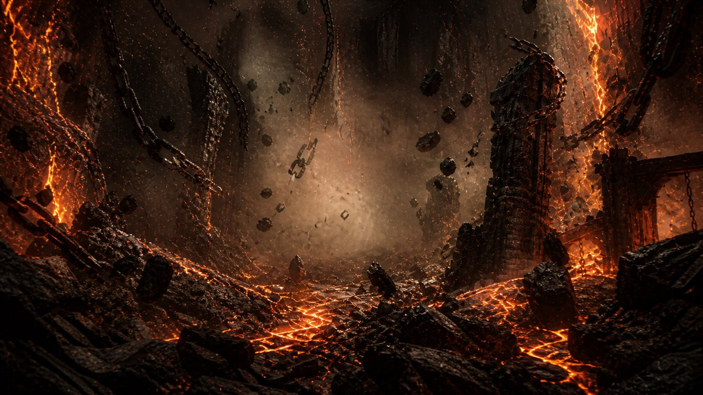
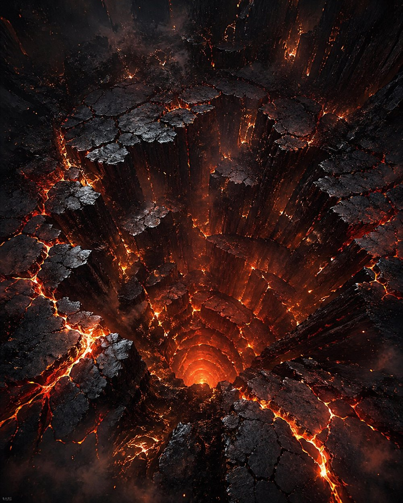

Azarun.
Cinematic AI trailer introducing an African mythological hero—backed by custom Runpod GPU LoRA training (azarun_god_v1) for cross-shot character consistency.
The Challenge
Generative video pipelines break down across edits when characters morph between cuts. Achieving studio-grade continuity requires disciplined dataset curation, custom GPU LoRA training, and strict visual evaluation.
What I Built & Directed
Azarun is the debut installment in a generative cinema series showcasing African mythological heroes. I trained custom character-consistency LoRA checkpoints (azarun_god_v1) on Runpod GPUs, audited outputs across checkpoints, and directed shot-by-shot motion across Kling AI, Seedance, Gemini, and GPT.
Key Proof & Outcomes
- Trained and evaluated custom azarun_god_v1 LoRA checkpoints on Runpod GPU infrastructure to lock facial identity, armor engravings, and proportions across shots.
- Directed end-to-end shot planning, camera choreography, and audio-synced sequences across Kling AI and Seedance.
- Watch 4 real rendered trailer shots and inspect the cross-shot LoRA consistency renders directly below.
Core Features & Architecture
- Custom Runpod GPU LoRA training (azarun_god_v1, multi-checkpoint evaluation & dataset iteration)
- Shot-by-shot cinematic prompt architecture across Kling AI, Seedance, Gemini, and GPT
- Cross-shot visual identity lock (face, glowing amber eyes, ram-horn pauldrons, battle-axe & obsidian armor)
- Audio-synced motion clips, volcanic environment worldbuilding, and trailer end-screen production
Runpod Custom LoRA (azarun_god_v1) Consistency & Keyframes
Side-by-side renders demonstrating locked character anatomy, facial identity, armor engravings, and volcanic lighting across independent prompts and camera angles.



